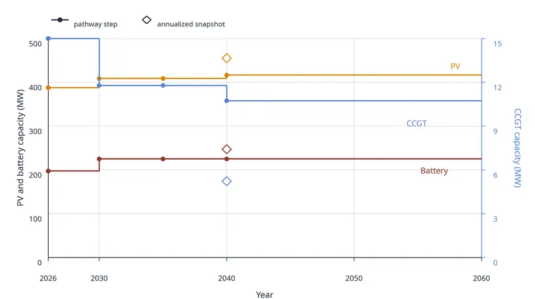

Electricity-Consuming Facility Transition
This example compares two ways of representing the transition of an electricity-consuming facility. The facility has a continuous 70 MW electricity demand and no option to purchase from the grid. It must therefore serve its own load with PV, a battery, or CCGT.
The first case is a greenfield annualized 2040 snapshot: it sees only target-year conditions and annualizes capital costs into one year. The second case is a linked pathway from 2026 to 2040 with a model horizon to 2060. The pathway starts with 15 MW of inherited CCGT capacity installed in 2025, so it can use a sunk gas unit during the transition but must also respect retirement and replacement logic.
Data Sources
The technology-cost values below are illustrative values derived from Danish Energy Agency technology-data catalogues:
- PV and CCGT values are based on Technology Data for Generation of Electricity and District Heating.
- Battery values are based on Technology Data for Energy Storage.
Fuel costs, direct emission factors, the emissions cap, and the synthetic PV profile are scenario assumptions chosen to keep the example compact.
Model
The model uses a full-year hourly mesh with 8760 timesteps. Dispatch-dependent quantities such as fuel use, cycling costs, and direct emissions are therefore already annual totals. Fixed costs stay annual.
using EnergyPathway
using DataFrames: DataFrame
using HiGHS
using JuMP: @constraint, set_silent
# Assumptions are kept together in a dictionary. For an example, this is easier
# to scan and modify than a long sequence of unrelated top-level constants.
assumptions = Dict(
# These are the pathway decision years. Capacity can change in these years,
# while intermediate years inherit the previous decision year's capacity.
:snapshot_years => [2026, 2030, 2035, 2040],
# The economic horizon extends beyond the last decision year so investments
# made in 2040 still carry value and costs over their useful project life.
:end_year => 2060,
:discount_rate => 0.05,
:load_mw => 70.0,
:hours_per_year => 8760,
:emission_cap_t => Dict(:start => 30_000.0, :target => 15_000.0),
# Initial capacity is represented as (installation year, component name,
# capacity, lifetime). Here the inherited CCGT is alive in 2026.
:existing_capacity => [(2025, "CCGT", 15.0, 15)],
:technology => Dict(
# Capex and fixed O&M are illustrative 2040-style values based on the
# Danish Energy Agency technology-data catalogues. Fuel costs and direct
# emission factors are scenario assumptions for this example.
"PV" => Dict(:capex => 320_000.0, :fom => 8_100.0, :lifetime => 40),
"battery" => Dict(
:capex => 771_200.0,
:fom => 8_675.898,
:lifetime => 30,
:duration_h => 4.0,
:cycling_cost => 1.0,
:efficiency_in => 0.92,
:efficiency_out => 0.92,
),
"CCGT" => Dict(
:capex => 866_648.765,
:fom => 28_604.726,
:lifetime => 25,
:variable_cost => 55.207,
:co2_t_per_mwh => 0.360,
),
),
)
first_year(case=assumptions) = first(case[:snapshot_years])
target_year(case=assumptions) = last(case[:snapshot_years])
# Linear interpolation is used for the policy trajectory, not for capacities.
# Pathway capacities are carried forward between explicit decision years.
function lerp(year, start_year, end_year, start_value, end_value)
share = (year - start_year) / (end_year - start_year)
return start_value + share * (end_value - start_value)
end
function emission_cap(year, case=assumptions)
# The cap tightens from 2026 to 2040, then stays fixed through the economic
# horizon. This keeps post-2040 renewals subject to the target constraint.
if year <= target_year(case)
return lerp(
year,
first_year(case),
target_year(case),
case[:emission_cap_t][:start],
case[:emission_cap_t][:target],
)
else
return case[:emission_cap_t][:target]
end
end
function annuity(capex, lifetime, case=assumptions)
# The annualized snapshot cannot decide when construction happens, so capex
# is converted to a recurring fixed charge using the same discount rate.
rate = case[:discount_rate]
return capex * rate / (1.0 - (1.0 + rate)^(-lifetime))
end
function yearly_mesh(case=assumptions)
# A default TimeMesh represents the full model year at hourly resolution.
return TimeMesh()
end
function load_profile(case=assumptions)
# A flat load keeps the comparison focused on capacity-expansion logic.
return fill(case[:load_mw], case[:hours_per_year])
end
function pv_profile(case=assumptions)
# This synthetic profile gives PV both daily and seasonal structure without
# pulling an external weather file into the documentation example.
hours = 0:(case[:hours_per_year] - 1)
values = [
0.88 *
max(0.0, sin(pi * ((hour % 24) - 6) / 12)) *
(0.78 + 0.22 * sin(2pi * (div(hour, 24) - 80) / 365))
for hour in hours
]
return [value < 1e-8 ? 0.0 : value for value in values]
end
function pathway_asset_behaviors(port_name, tech_data)
# Pathway assets have explicit deployment, retirement, lifetime, and
# one-time capex behavior, so costs are paid when capacity is built.
return [
VariableCapacity(port_name, energy),
VariableDeployment(port_name, energy),
VariableRetirement(port_name, energy),
Lifetime(tech_data[:lifetime]),
SingleCost(
:capex,
:deployment,
port_name,
energy,
tech_data[:capex],
# Split capex across the year before commissioning and the
# commissioning year to mimic a simple construction-payment profile.
Dict(-1 => 0.30, 0 => 0.70),
),
FixedCost(:fom, port_name, energy, tech_data[:fom]),
]
end
function annualized_asset_behaviors(port_name, tech_data, case=assumptions)
# The snapshot comparison has no deployment history, so each MW of capacity
# carries an annualized investment charge instead of one-time capex.
return [
VariableCapacity(port_name, energy),
FixedCost(
:annualized_capex,
port_name,
energy,
annuity(tech_data[:capex], tech_data[:lifetime], case),
),
FixedCost(:fom, port_name, energy, tech_data[:fom]),
]
end
function asset_behaviors(mode, port_name, tech_data, case=assumptions)
# Both cases use the same physical technologies; only the investment
# accounting changes between snapshot and pathway formalisms.
if mode == :pathway
return pathway_asset_behaviors(port_name, tech_data)
elseif mode == :annualized
return annualized_asset_behaviors(port_name, tech_data, case)
else
throw(ArgumentError("unknown investment mode: $mode"))
end
end
function add_facility_system!(snapshot, year; mode, case=assumptions)
tech = case[:technology]
carrier = EnergyCarrier("electricity", sim(snapshot))
# Curtailment on the plant bus lets PV overproduction be spilled instead of
# forcing infeasible generation during high-solar, low-storage hours.
bus = Node("plant_bus", carrier; rule=:curtailed)
# The facility is represented as a fixed electrical baseload.
# The site is islanded: there is deliberately no grid-purchase component.
load = Component("facility_load", Demand(carrier, load_profile(case)))
connect!(snapshot, load, bus)
# PV output is limited by the normalized production profile and its chosen
# capacity on the output port.
pv = Component(
"PV",
ProfileSource(carrier, pv_profile(case)),
asset_behaviors(mode, "output", tech["PV"], case),
)
connect!(snapshot, pv, bus)
# The storage capacity variable is on the input port. Duration links charge
# power to energy capacity and output capability inside Nosy.
battery = Component(
"battery",
BasicStorage(
carrier;
eff_i=tech["battery"][:efficiency_in],
eff_o=tech["battery"][:efficiency_out],
simplified=true,
),
vcat(
asset_behaviors(mode, "input", tech["battery"], case),
[
Duration(tech["battery"][:duration_h]),
VariableCost(:cycling, "output", energy, tech["battery"][:cycling_cost]),
],
),
)
connect!(snapshot, battery, bus)
# CCGT is the dispatchable backstop. Its investment treatment still depends
# on the selected mode, just like PV and battery.
ccgt = Component(
"CCGT",
DispatchableSource(carrier),
vcat(
asset_behaviors(mode, "output", tech["CCGT"], case),
[
VariableCost(
:fuel,
"output",
energy,
tech["CCGT"][:variable_cost],
),
],
),
)
connect!(snapshot, ccgt, bus)
# Because the mesh is hourly for a full year, aggregating CCGT output gives
# annual MWh, which can be multiplied directly by the emission factor.
annual_emission =
tech["CCGT"][:co2_t_per_mwh] *
balance(snapshot, "CCGT", :output, energy; collapse=true, aggregate=true)
@constraint(model(sim(snapshot)), annual_emission <= emission_cap(year, case))
return snapshot
end
function build_annualized_snapshot(case=assumptions)
# The comparison snapshot only models the target year. Discounting is set to
# zero because all investment costs have already been annualized.
opt = PathOpt(
[target_year(case)];
discountrate=0.0,
baseyear=target_year(case),
endyear=target_year(case),
mesh=yearly_mesh(case),
)
snapshot = Path(HiGHS.Optimizer, opt)
set_silent(model(snapshot))
add_facility_system!(
snapshot[target_year(case)],
target_year(case);
mode=:annualized,
case=case,
)
optimize!(snapshot, cost(snapshot))
return extract(snapshot)
end
function build_pathway(case=assumptions)
# The pathway shares one JuMP model across all decision-year snapshots and
# receives inherited capacity through the initial-capacity data.
opt = PathOpt(
case[:snapshot_years];
discountrate=case[:discount_rate],
baseyear=first_year(case),
endyear=case[:end_year],
mesh=yearly_mesh(case),
ini=case[:existing_capacity],
)
pathway = Path(HiGHS.Optimizer, opt)
set_silent(model(pathway))
# Each decision year has the same physical system, with year-specific policy
# constraints and pathway behaviors linking capacities through time.
for year in case[:snapshot_years]
add_facility_system!(pathway[year], year; mode=:pathway, case=case)
end
optimize!(pathway, cost(pathway))
return extract(pathway)
end
function solve_facility_transition(case=assumptions)
return build_annualized_snapshot(case), build_pathway(case)
end
function annual_flow_mwh(snapshot, component_name, case=assumptions)
return balance(snapshot, component_name, :output, energy; collapse=true, aggregate=true)
end
function annual_emission_t(snapshot, case=assumptions)
tech = case[:technology]
return tech["CCGT"][:co2_t_per_mwh] * annual_flow_mwh(snapshot, "CCGT", case)
end
clean_mw(value) = abs(value) < 1e-6 ? 0.0 : value
rounded_mw(value) = round(clean_mw(value); digits=3)
function capacity_summary(snapshot, pathway, case=assumptions)
rows = NamedTuple[]
# Put the one-year snapshot next to each pathway decision year so the final
# 2040 end state can be compared with the dynamic transition.
push!(rows, (
case="annualized snapshot",
year=target_year(case),
PV_MW=rounded_mw(capacity(snapshot, "PV", target_year(case))),
battery_MW=rounded_mw(capacity(snapshot, "battery", target_year(case))),
CCGT_MW=rounded_mw(capacity(snapshot, "CCGT", target_year(case))),
))
for year in case[:snapshot_years]
push!(rows, (
case="pathway $(case[:end_year])",
year=year,
PV_MW=rounded_mw(capacity(pathway, "PV", year)),
battery_MW=rounded_mw(capacity(pathway, "battery", year)),
CCGT_MW=rounded_mw(capacity(pathway, "CCGT", year)),
))
end
return DataFrame(rows)
end
function emission_summary(snapshot, pathway, case=assumptions)
# Emissions are reported against the cap to show which periods bind and how
# the inherited gas capacity is constrained over time.
rows = NamedTuple[(
case="annualized snapshot",
year=target_year(case),
emission_t=round(annual_emission_t(snapshot[target_year(case)], case); digits=1),
cap_t=emission_cap(target_year(case), case),
)]
for year in case[:snapshot_years]
push!(rows, (
case="pathway $(case[:end_year])",
year=year,
emission_t=round(annual_emission_t(pathway[year], case); digits=1),
cap_t=emission_cap(year, case),
))
end
return DataFrame(rows)
end
snapshot, pathway = solve_facility_transition();
nothing
# outputCapacity Summary
julia> capacity_summary(snapshot, pathway)
5×5 DataFrame
Row │ case year PV_MW battery_MW CCGT_MW
│ String Int64 Float64 Float64 Float64
─────┼──────────────────────────────────────────────────────────
1 │ annualized snapshot 2040 455.148 247.283 5.223
2 │ pathway 2060 2026 387.768 197.447 15.0
3 │ pathway 2060 2030 408.863 225.067 11.782
4 │ pathway 2060 2035 408.863 225.067 11.782
5 │ pathway 2060 2040 416.495 225.067 10.737The annualized snapshot builds directly for 2040. The pathway builds less PV and uses more CCGT early on because the inherited 15 MW unit is already present and does not carry new investment cost.

Emission Summary
julia> emission_summary(snapshot, pathway)
5×4 DataFrame
Row │ case year emission_t cap_t
│ String Int64 Float64 Float64
─────┼─────────────────────────────────────────────────
1 │ annualized snapshot 2040 2508.1 15000.0
2 │ pathway 2060 2026 28597.4 30000.0
3 │ pathway 2060 2030 15948.0 25714.3
4 │ pathway 2060 2035 15948.0 20357.1
5 │ pathway 2060 2040 15000.0 15000.0The emissions table is useful for checking that the inherited gas unit is not a free pass: even when its investment cost is sunk, its dispatch is still limited by the direct-emissions cap in each modeled year.